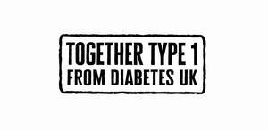
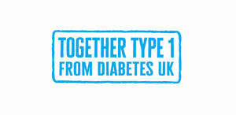

Trade Mark Journal No.2025/041 10 October 2025
UK00004269133 25 September 2025 (36,41)
Mark 1

Mark 2

- Class 36
- Financial, monetary and banking services; insurance services; real estate services; financial management of membership schemes; financial advice; providing fundraising activities to support medical research and procedures for those in need; fundraising; arranging fundraising; charitable fundraising; fundraising and sponsorship; arranging charitable fundraising activities; fundraising and financial sponsorship; research (financial -); financial advice relating to trusts; insurance advisory services; charitable services, namely financial services; charitable fund raising services; charitable fund raising services for diabetes; organising of charitable collections; financial services; financial advisory services; financial planning; financial planning services; financial grant services; insurance services; pension services; investment fund services; fund management services; providing funding for research institutions; providing funding for research into diabetes; charitable fundraising by means of entertainment events; charitable collections; insurance; travel insurance.
- Class 41
- Education; providing of training; entertainment; sporting and cultural activities; publication of magazines; publication of electronic magazines; publishing of books, magazines; publishing services for books and magazines; providing on-line non-downloadable general feature magazines; publication of periodicals and books in electronic form; online electronic publishing of books and periodicals; vocational guidance; health education; health club services; health and wellness training; instruction courses relating to health; training services relating to occupational health; providing of training in the field of health care and nutrition; education and training in the field of occupational health and safety; training for handling scientific instruments and apparatus for research in laboratories; conducting educational support programmes for healthcare professionals; arranging and conducting of in-person educational forums; conducting educational support programmes for patients; publication of texts; preparation of texts for publication; publication of texts in the form of electronic media; publication of consumer magazines; publication of periodicals; publication of books, magazines, almanacs and journals; educational and training services relating to healthcare; organisation of seminars and conferences; arranging, conducting and organisation of conferences; arranging and conducting of educational events for charitable purposes; arranging and conducting of sports events for charitable purposes; arranging and conducting of entertainment events for charitable purposes; organising of education exhibitions; arranging of classes; cultural activities; organisation of entertainment and cultural events; provision of instruction relating to nutrition; publishing services; provision of non-downloadable electronic publications; conducting classes in nutrition; publishing; electronic publishing; information, consultancy and advisory services relating to all the aforesaid services.
The British Diabetic Association
Representative: Stobbs